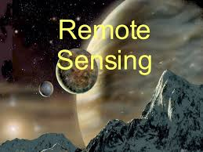
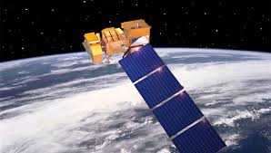
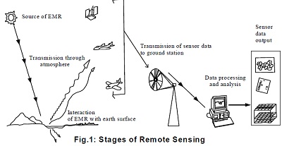
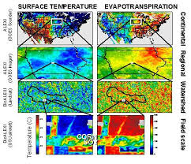
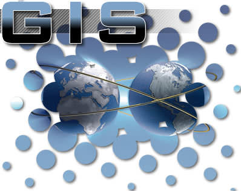
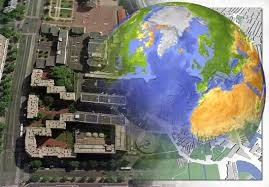
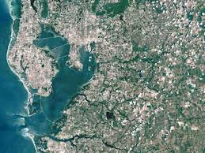
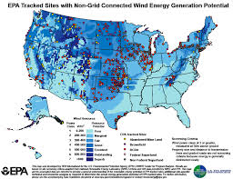

Una introducción
Hoy en día el campo de la Teledetección y SIG se ha convertido emocionante y glamorosa con oportunidades en rápida expansión. Muchas organizaciones gastan grandes cantidades de dinero en estos campos. Aquí surge la pregunta de por qué estos campos son tan importantes en los últimos años. Dos razones principales son que hay detrás de esto. Haga clic en cada objeto para saber más. Introducción Información general Historia Solicitud
Esta fue una breve introducción a la teleobservación. Para obtener más información del Sistema de Información Geográfica (SIG), por favor consulte los paneles plegables de abajo. Introducción Información general Historia Solicitud
1) Hoy en día los científicos, investigadores, estudiantes, e incluso personas comunes están mostrando gran interés para una mejor comprensión de nuestro medio ambiente. Por medio ambiente se entiende el espacio geográfico de su área de estudio y los eventos que tienen lugar allí. En otras palabras, nos hemos dado cuenta de que el espacio geográfico, junto con los datos de describirlo, es parte de nuestro mundo cotidiano; casi todas las decisiones que tomamos está influenciada o dictada por algún hecho de la geografía.
2) El avance en la tecnología espacial sofisticada (que puede proporcionar gran volumen de datos espaciales), junto con la disminución de los costos de hardware y software (que puede manejar estos datos) equipo ha hecho Teledetección y SIG asequible para no sólo compleja situación del medio ambiente / espacial, sino también asequible para un público cada vez más amplio.
Por lo tanto, se convierte en la necesidad de la hora de ser conscientes de los SIG y RS con el fin de ayudar a la tierra y de la sociedad para el futuro sostenible.
Para obtener más información acerca de los SIG y RS, Haga clic en el panel plegable que contiene la información pertinente.
Teledetección
Literalmente Teledetección significa la obtención de información acerca de un objeto, área o fenómeno sin entrar en contacto directo con él. Si nos guiamos por este significado de Teledetección, a continuación, una serie de cosas vendría debajo del sensor remoto, por ejemplo, Los sismógrafos, fathometer etc. Sin entrar en contacto directo con el foco de terremoto, el sismógrafo pueden medir la intensidad del terremoto. Del mismo modo, sin entrar en contacto con el fondo del océano, fathometer puede medir su profundidad. Sin embargo, moderno Teledetección significa la adquisición de información sobre la tierra y aguda; s de tierra y agua mediante el uso de superficies reflejada o emitida energía electromagnética. 
La teledetección permite recoger datos de zonas peligrosas o inaccesibles. Remota aplicaciones de detección incluyen el monitoreo de la deforestación en áreas como la cuenca theAmazon, características glaciales en regiones árticas y antárticas, y la profundidad de sondeo de profundidades costeras y oceánicas. Colección militar durante la Guerra Fría hizo uso de la recogida de enfrentamiento de los datos sobre las zonas fronterizas peligrosas. La teledetección también reemplaza la recopilación de datos costosa y lenta en el suelo, lo que garantiza en el proceso que las áreas u objetos no se vean perturbadas.
Plataformas orbitales recogen y transmiten datos de diferentes partes del espectro electromagnético, que en conjunto con mayor escala de detección y análisis aérea o terrestre, proporciona a los investigadores suficiente información para monitorear las tendencias tales como El Niño y otros fenómenos naturales a largo y corto plazo. Otros usos incluyen diferentes áreas de las ciencias de la tierra, como la gestión de recursos naturales, campos agrícolas, como el uso de la tierra y la conservación, y la seguridad nacional y los gastos generales, recogida en tierra y stand-off en las zonas fronterizas.

La disciplina moderna de la teledetección surgió con el desarrollo del vuelo. El aeronauta G. Tournachon (alias Nadar) hizo fotografías de París de su globo en 1858. palomas Messenger, cometas, cohetes y globos no tripulados también se utilizaron para las imágenes tempranas. Con la excepción de los globos aerostáticos, en primer lugar, las imágenes individuales no eran particularmente útiles para la elaboración de mapas o con fines científicos.
Fotografía aérea sistemática fue desarrollado para fines de vigilancia y reconocimiento militar a partir de la Primera Guerra Mundial y llegar a un clímax durante la Guerra Fría con el uso de aviones de combate modificados tales como el P-51, P-38, RB-66 y el F-4C , o específicamente diseñado plataformas de recogida como el U2 / TR-1, SR-71, A-5 y la serie OV-1 tanto en la recogida de los gastos generales y stand-off. Un desarrollo más reciente es el de las vainas de sensores cada vez más pequeños, como los utilizados por la policía y los militares, en ambas plataformas tripuladas y no tripuladas. La ventaja de este enfoque es que esto requiere una mínima modificación a una célula dada. Tecnologías de imagen posteriores incluirían infrarrojos, convencional, Doppler y el radar de apertura sintética.
El desarrollo de satélites artificiales en la segunda mitad del siglo 20 permitió la teledetección para pasar a una escala global a partir del fin de la Guerra Fría. Instrumentación bordo de varios observación de la Tierra y del clima satélites como el Landsat, el Nimbus y las misiones más recientes, como RADARSAT y UARS proporcionaron mediciones globales de diversos datos de civiles, la investigación y con fines militares. Las sondas espaciales a otros planetas también han proporcionado la oportunidad de realizar estudios de percepción remota en entornos extraterrestres, radar de apertura sintética a bordo de la nave espacial de Magellan proporciona mapas topográficos detallados de Venus, mientras que los instrumentos a bordo de los estudios SOHOallowed a realizar en el Sol y el viento solar, justo por citar algunos ejemplos.
Los acontecimientos recientes incluyen, a partir de los años 1960 y 1970 con el desarrollo de procesamiento de imágenes de imágenes de satélite. Varios grupos de investigación en Silicon Valley, incluyendo el Centro de Investigación Ames de la NASA, GTE, y ESL Inc. desarrollaron transformada de Fourier técnicas que conducen a la primera mejora notable de datos de imágenes. [Cita requerida] En 1999 el primer satélite comercial (IKONOS) recoger muy imágenes de alta resolución se puso en marcha.

Las aplicaciones de la teledetección:-
These are the basic applications of RS..
altímetros
imágenes

Este artículo contiene la información relevante acerca de Teledetección. Estos paneles plegables están diseñados y programados por Anmol & Anmol
Sistema de información geográfica
Haga clic en cada objeto para saber más.
La expansión de los SIG es Sistema de Información Geográfica, que consiste en tres palabras, a saber. Sistema Geográfico de Información y. Aquí la palabra Geographic se ocupa de objetos espaciales o características que pueden ser referenciados o relacionados con una ubicación específica en la superficie de la tierra. El objeto puede ser física / natural o puede ser culturales / hombre hizo. De igual manera la palabra Información se refiere a la gran cantidad de datos sobre un objeto particular en la superficie de la tierra. Los datos incluyen un conjunto de aspectos cualitativos y cuantitativos que el mundo real objetos adquieren. El término Sistema se utiliza para representar enfoque de sistemas en el que el entorno complejo (compuesto por un gran número de objetos / funciones en la superficie de la tierra y sus características complejas) se descompone en sus partes componentes para una fácil comprensión y gastos de envío, pero se considera que forman un todo integrado para la gestión y toma de decisiones. Hoy en día esto es posible en un lapso muy corto de tiempo con el desarrollo de hardware sofisticado y software. Por lo tanto, el SIG es un sistema de información basado en computadora que se conecta una variedad de cualidades y características de ubicación geográfica y ayuda en la planificación y toma de decisiones.
Centro Internacional de Formación (CIF), Holanda define Sistema de Información Geográfica (SIG) como un sistema informático que facilita las fases de entrada de datos, análisis de datos y presentación de los datos, especialmente en los casos en los que estamos tratando de datos geo-referenciada.
Sociedad India de Geomática (ISG) & amp; Centro Espacial de la India Aplicación (ISRO) SIG se define como un sistema que proporciona un mecanismo computarizado para la integración de varios conjuntos de datos de información geográfica y análisis de los mismos con el fin de generar información relevante para las necesidades de planificación en un contexto.
De acuerdo con el Centro para la Gestión de base de datos espaciales y Soluciones (CSDMS), SIG es una herramienta basada en computadora para mapeo y análisis de las cosas que existen y eventos que suceden una tierra.
Burrough (1986) SIG se define como un conjunto de herramientas para recopilar, almacenar, recuperar a voluntad, la transformación y la visualización de datos espaciales del mundo real para un conjunto particular de propósito.
Arnoff (1989) SIG se define como un sistema basado en computadora que proporciona cuatro conjuntos de capacidades para manejar datos referenciados geográficamente, a saber. la entrada de datos, gestión de datos (almacenamiento y recuperación de datos), análisis de manipulación y salida de datos.
A partir de las definiciones anteriores, se puede concluir que un usuario SIG espera que el apoyo del sistema para introducir datos georreferenciados para analizar de varias maneras y producir salida (mapas y otros) de los datos. SIG se basa en los conceptos e ideas de muchas disciplinas diferentes, como la cartografía, la ciencia congitive, la informática, la ingeniería, las ciencias ambientales, la geodesia, arquitectura del paisaje, el derecho, la fotogrametría, la política pública, la teledetección, las estadísticas y la topografía. Por lo tanto, no sólo implica el estudio de las cuestiones fundamentales que surgen de la creación, manipulación, almacenamiento y uso de la información geográfica, pero también analiza el impacto de los SIG en los individuos y la sociedad y las influencias de la sociedad en los SIG.

1) Mantener larga tradición de elaboración de mapas como fondo, GIS se ha desarrollado a mediados del siglo 20 con el desarrollo de la informática. El análisis de los datos de ubicación geográfica se está haciendo por los equipos de las organizaciones gubernamentales y universidades en EE.UU. durante los años 1950 y 1960.
La primera verdadera G.I.S. operativa fue desarrollado por el Dr. Roger Tomlinson, Departamento de Silvicultura y Desarrollo Rural, Canadá. Se llama como Canadá Sistema de Información Geográfica (de CGIS) y se utiliza para almacenar analizar y manipular los datos relacionados con la tierra. Dr. Roger Tomlison también era conocido como el Padre de SIG . En 1964, un laboratorio de Computación Gráfica y Análisis Espacial fue establecido en la Escuela de Harvard de Diseño por Howard T. Fisher. Esta organización ha desarrollado una serie de importantes conceptos teóricos de la manipulación de datos espaciales y en 1970 se distribuye el código de software seminal y del sistema, como SYMAP , RED y ODYSSEY . Esto inspiró el desarrollo comercial posterior.
2) Por principios de 1980, M & S Computing (más tarde Intergraph) y Environmental Systems Research Institute (ESRI) emergieron como los proveedores comerciales de GIS software. ESRI lanzó ARC / Info y ARC Ver el software en 1981 y 1992 respectivamente.
A finales del siglo 20, el desarrollo de la ARC Ver habilitado la visualización GIS datos a través de Internet y elimina muchos de los gastos de hardware y licencias de paquetes de software. Desde entonces, una serie de organizaciones y universidades han estado haciendo investigaciones en el campo de los SIG y el desarrollo de softwares de uso fácil. Ahora hay un número cada vez mayor de la libre, SIG de código abierto paquetes que se ejecutan en una amplia gama de sistemas operativos y realizar tareas específicas. 
Después de tener conocimiento acerca del sistema informático y que tiene diferentes tipos de datos (espaciales y de atributos), vamos a ver cómo funciona el SIG. Función de los SIG se explica en los siguientes pasos:
Entrada de datos
Tanto los datos espaciales y de atributos se introducen en el sistema informático por diferentes dispositivos de entrada como el escáner, digitalizador, teclado, ratón, etc. escáner, digitalizador, ratón se utilizan para introducir datos espaciales. Los datos de atributos disponibles como informes, tablas, etc. se introducen a través de teclado. Como los datos se extrae de diferentes fuentes, que tienen diferentes escalas, proyecciones, haciendo referencia sistema etc. Por lo tanto, hay una necesidad de estandarizar la base de datos a la norma común. Software GIS permite esta operación por geo referenciación o láminas de caucho método. Esto significa que se extiende de los mapas en diferentes direcciones con el fin de que coincida con coordenadas conocidas. Almacenamiento de Datos
Las diferentes entidades espaciales que representan diferentes características de mundo real pueden ser almacenados en dos formatos diferentes en el ordenador en el formato de trama y en formato vectorial. Se requiere que el conocimiento de estos formatos en los que los datos espaciales se almacenan, para los tomadores de decisiones, ya que afecta a la exactitud de los datos, su análisis, capacidad de almacenamiento del ordenador, etc.
En formato raster, toda el área de estudio se divide en malla regular o células cuadrados organizados en filas y columnas. Las células individuales se utilizan para almacenar entidades de punto, línea y área. Los datos de puntos se almacenan en las células individuales. Los datos de línea se almacenan mediante la vinculación de las células en líneas. Las unidades de área se almacenan mediante la agrupación de células en polígonos. El tamaño de la celda de la cuadrícula es muy importante ya que influye en la precisión de las funciones espaciales.

Este artículo contiene la información relevante acerca de Teledetección. Estos paneles plegables están diseñados y programados por Anmol y Anmol
Este fue un breve resumen de Sistema de Información Geográfica (SIG). Para obtener más información de los SIG y RS pertinente a las aguas subterráneas haga clic en el botón de abajo.
Anman Infotech. | Diseñado por Anmol & Anmol | La Escuela Internacional aria Varanasi | Creado en Adobe Dreamweaver Creative Cloud
Sitio Diseñado en HTML5 |
Fondo creado en Picasa Por Google | Derechos contenido pertenecen a sus respectivos propietarios.